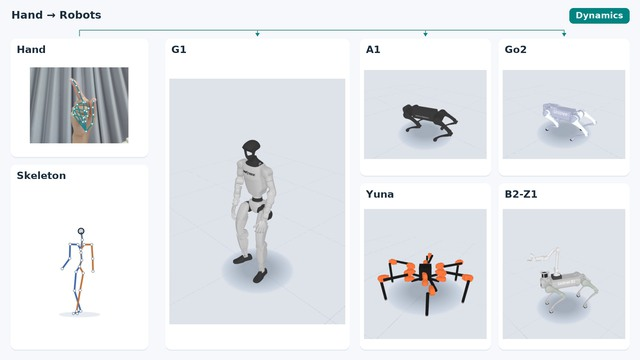
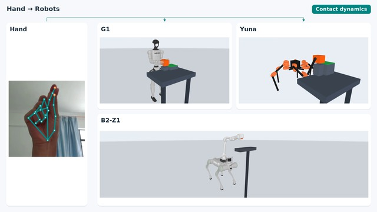
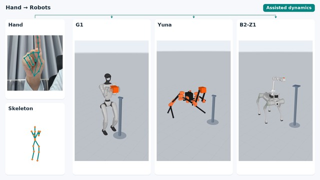

ANONYMOUS SUPPLEMENTARY DEMONSTRATIONS
One hand.
Many embodiments.
From whole-body motion to moving objects.
Recorded hand inputs, shared tasks, different robot bodies.
Video could not load. Try the MP4 link or reload the page.
Humanoid · Quadruped · Hexapod
THE MOTION COLLECTION
Different bodies.
A shared task.
Explore hand-driven demonstrations across three task families, with kinematic references and dynamics views presented together.

Locomotion
Walk, run, jump, turn and more.
G1 · A1 · Go2 · Yuna · B2-Z1
Manipulation
Lift, transfer and lower objects.
G1 · Yuna · B2-Z1
Mobile carrying
Approach, grasp, carry, turn and place.
G1 · Yuna · B2-Z1EXPLORE THE DEMONSTRATIONS
Motion, in every form.
Choose a task. Switch between the paired views.
The full-resolution videos retain the original hand and robot panels.
Video could not load. Try the MP4 link or reload the page.
Forward walking across five robot embodiments.
ABOUT THE DEMOS
A visual research companion.
These videos show recorded-input demonstrations in simulation. The paired views illustrate each task; they are not a controlled comparison between algorithms.
How to read the two views
Kinematic shows reference motion. Dynamics shows the corresponding simulation-based demonstration. Physical feasibility is not established by a kinematic reference alone. For stationary manipulation, G1 and Yuna kinematic views replay the same phase-aligned capture states, without a separate physics run.
Controllers and assistance
Whole-body demonstrations use robot-specific controllers, including SONIC for G1. Go2 walk and run use joint-torque PD and contact-wrench feedback, not PPO. Stationary manipulation fixes the robot bases. Mobile manipulation uses bounded virtual base force/torque stabilization and is not unassisted balance or a learned SONIC/PPO carrying policy.
Recording and evaluation scope
The clips use recorded hand inputs and offline alignment. They are separate demonstrations, not a single uninterrupted controller rollout or a live teleoperation evaluation. Mobile task boundaries are manually segmented; its skeleton is derived from G1 state, not a measured human skeleton. These videos do not establish hardware performance, recognition accuracy or generalization.